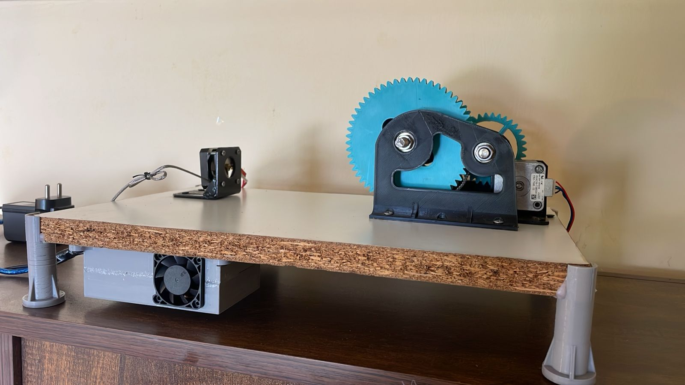

Hardware / Sustainability
PET to Filament Recycling
Details and full project report will be added soon.
Overview
This project is currently being documented. Detailed methodologies, CAD models, and test results will be added here soon.

Hardware / Sustainability
Details and full project report will be added soon.
This project is currently being documented. Detailed methodologies, CAD models, and test results will be added here soon.
